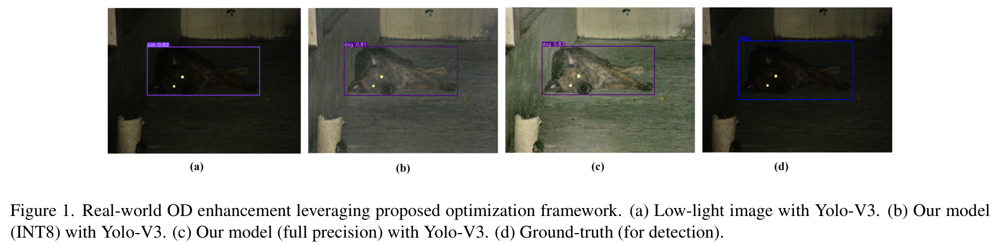
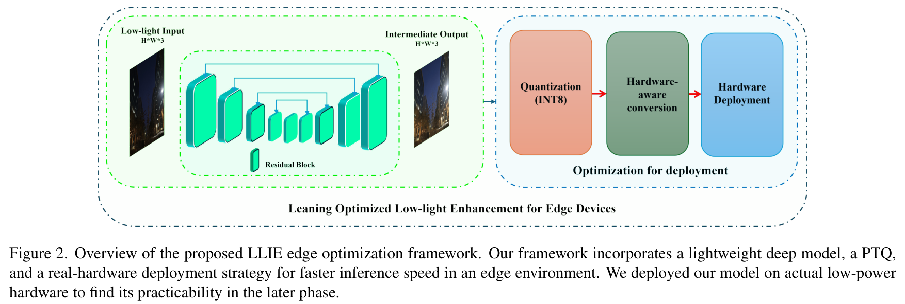
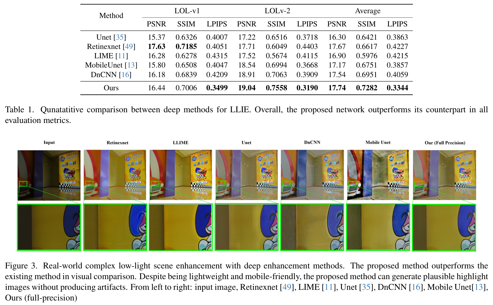
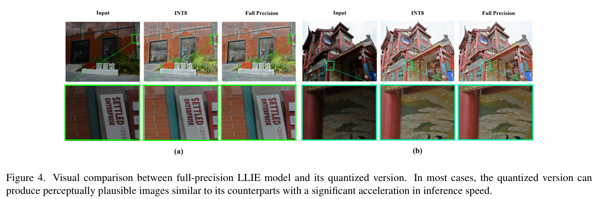
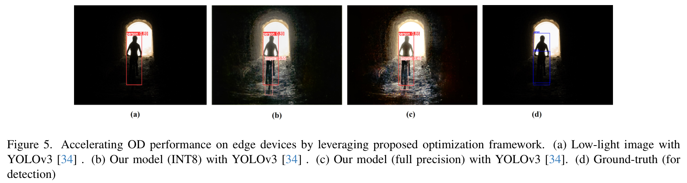
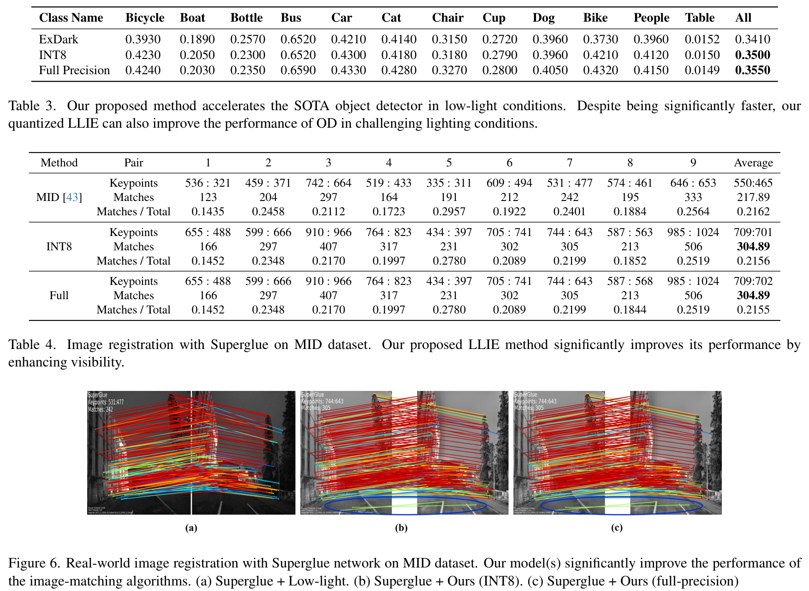

Học Tăng Cường Ảnh Thiếu Sáng Tối Ưu Hóa Cho Các Tác Vụ Thị Giác Thiết Bị Biên
Learning Optimized Low-Light Image Enhancement for Edge Vision Tasks
Hầu hết các giải thuật tăng cường ảnh thiếu sáng (LLIE) hiện nay được thiết kế phục vụ thị giác con người (Human Visual Perception), tập trung tối đa hóa các chỉ số méo dạng điểm ảnh như PSNR và SSIM. Để đạt được điều này, các phương pháp thường sử dụng các kiến trúc mạng nơ-ron khổng lồ (Vision Transformer, Diffusion) với hàng chục triệu tham số và độ trễ cao, hoàn toàn bất khả thi để triển khai trên các thiết bị biên (Edge Vision Devices) có tài nguyên phần cứng giới hạn trong xe tự hành, máy bay không người lái (UAV) hay camera giám sát ban đêm. Trong bài báo này, chúng tôi đề xuất Edge-LLIE — một khung tối ưu hóa tăng cường ảnh thiếu sáng đột phá phục vụ trực tiếp cho các tác vụ thị giác máy tính hạ nguồn (Downstream Edge Vision Applications - EVA), cụ thể là Nhận diện vật thể (Object Detection) và Đăng ký ảnh / Khớp điểm đặc trưng (Image Registration). Bằng cách kết hợp kỹ thuật Tái tham số hóa cấu trúc (Structural Reparameterization) khi suy luận và kỹ thuật Lượng tử hóa sau huấn luyện (Post-Training Quantization - PTQ INT8), mô hình của chúng tôi đạt tốc độ suy luận kinh ngạc lên đến 199 FPS trên phần cứng nhúng ARM64, đồng thời cải thiện trực tiếp độ chính xác của bộ nhận diện YOLOv3 thêm +0.9% mAP và tăng số lượng điểm khớp chính xác của SuperGlue thêm hơn +40% trên dữ liệu chụp đêm thế giới thực.

1. Giới Thiệu (Introduction)
Các hệ thống thị giác nhúng trên thiết bị biên (Edge Vision Applications - EVA) như xe tự hành, robot công nghiệp và thiết bị giám sát an ninh thường xuyên phải vận hành trong các môi trường thiếu sáng khắc nghiệt. Trong bóng tối, các thuật toán nhận diện vật thể (Object Detection - OD), theo dõi hành trình (Visual Odometry), và khớp đặc trưng (Feature Matching) bị suy giảm hiệu năng nghiêm trọng do mất mát độ tương phản và sự bùng phát của nhiễu cảm biến.
Thông thường, giải pháp tự nhiên là tích hợp một mô hình tăng cường ảnh thiếu sáng (LLIE) đóng vai trò bộ tiền xử lý (pre-processing module) trước khi đưa ảnh vào các mạng thị giác hạ nguồn. Tuy nhiên, các mô hình LLIE tiên tiến nhất hiện nay (SOTA LLIE) chủ yếu được thiết kế hướng tới mắt người quan sát:
- Độ phức tạp tính toán quá cao: Các mạng Vision Transformer (RetinexFormer, Restormer) yêu cầu bộ nhớ GPU máy trạm khổng lồ và thời gian suy luận lên tới hàng trăm mili-giây, không thể đáp ứng yêu cầu xử lý thời gian thực (>30 FPS) trên các bộ vi xử lý nhúng ARM hay Jetson.
- Sự sai lệch mục tiêu tối ưu (Misalignment): Một bức ảnh có chỉ số PSNR cao cho mắt người không đồng nghĩa với việc nó chứa các đặc trưng cạnh sắc nét mà các bộ trích xuất đặc trưng sâu (CNN backbones như Darknet, ResNet) yêu cầu. Ngược lại, các phép nội suy làm mịn ảnh quá mức thường làm triệt tiêu các điểm đặc trưng then chốt (keypoints).
Để giải quyết mâu thuẫn căn bản này, chúng tôi phát triển một khung làm việc tối ưu hóa kép: vừa đảm bảo tốc độ thực thi siêu tốc trên thiết bị biên bằng tái tham số hóa và lượng tử hóa INT8, vừa tối ưu hóa cấu trúc gờ cạnh để phục vụ trực tiếp cho các tác vụ thị giác hạ nguồn.
2. Các Công Trình Liên Quan (Related Work)
2.1 Mạng Nơ-ron Gọn Nhẹ Cho Thiết Bị Biên
Các nghiên cứu như MobileNet, ShuffleNet và Tiny-UNet đã mở đường cho việc đưa mạng nơ-ron sâu lên vi xử lý di động. Tuy nhiên, trong bài toán phục hồi ảnh, các mạng nơ-ron quá nhỏ thường không đủ dung lượng biểu diễn (representation capacity) để vừa khử nhiễu vừa khôi phục dải tương phản động, dẫn đến hiện tượng bệt màu hoặc biến dạng cấu trúc.
2.2 Tái Tham Số Hóa Cấu Trúc (Structural Reparameterization)
Lấy cảm hứng từ RepVGG [9], kỹ thuật tái tham số hóa cấu trúc cho phép mô hình huấn luyện với kiến trúc đa nhánh phân tán phức tạp (kết hợp các nhánh tích chập $3 \times 3$, $1 \times 1$ và kết nối đồng nhất identity), nhưng khi triển khai suy luận thực tế (inference), toàn bộ các nhánh song song được gộp toán học (mathematically collapsed) thành một lớp tích chập $3 \times 3$ duy nhất. Điều này mang lại lợi ích kép: sức mạnh biểu diễn sâu khi học, nhưng tốc độ suy luận thẳng băng cực nhanh trên phần cứng.

3. Phương Pháp Tối Ưu Hóa Thiết Bị Biên Đề Xuất (Method)
3.1 Kiến Trúc Tái Tham Số Hóa Cấu Trúc (Structural Reparameterization)
Trong quá trình huấn luyện, mỗi khối nơ-ron của chúng tôi bao gồm 3 nhánh song song:
Khi chuyển sang chế độ suy luận, chúng tôi chuyển đổi lớp $1 \times 1$ thành lớp $3 \times 3$ tương đương bằng cách đệm số 0 (zero-padding), đồng thời biến đổi nhánh identity thành một kernel $3 \times 3$ có giá trị 1 ở tâm và 0 ở xung quanh. Do tính chất tuyến tính của phép tích chập, trọng số cuối cùng $\mathbf{W}_{fuse}$ và độ lệch $\mathbf{b}_{fuse}$ được tính gộp chính xác:
Nhờ đó, mô hình suy luận hoàn toàn không tốn thêm bất kỳ chi phí phân nhánh hay chuyển vùng nhớ đệm nào, tối ưu hóa triệt để băng thông bộ nhớ (memory bandwidth) của vi xử lý biên.
3.2 Lượng Tử Hóa Sau Huấn Luyện (PTQ INT8)
Để đưa mô hình xuống mức tiêu thụ năng lượng thấp nhất, chúng tôi áp dụng lượng tử hóa INT8 sau huấn luyện. Trọng số thực 32-bit (FP32) được ánh xạ sang số nguyên có dấu 8-bit thông qua hệ số tỷ lệ $S$ và điểm không $Z$:
Chúng tôi sử dụng thuật toán hiệu chuẩn dải tương phản dựa trên phân kỳ Kullback-Leibler (KL-divergence calibration) để giảm thiểu hiện tượng cắt cụt biên độ (saturation clipping) trong các vùng bóng tối cực sâu.
4. Kết Quả Thực Nghiệm & Đối Chuẩn Phần Cứng (Experiments)
| Phương Pháp | Loại Mô Hình | LOL PSNR ↑ | LOL SSIM ↑ | LOL LPIPS ↓ | ExDark PSNR ↑ | ExDark SSIM ↑ | ExDark LPIPS ↓ |
|---|---|---|---|---|---|---|---|
| UNet [35] | CNN Chuẩn | 15.37 | 0.6326 | 0.4007 | 17.22 | 0.6516 | 0.3718 |
| RetinexNet [49] | Retinex CNN | 17.63 | 0.7185 | 0.4051 | 17.71 | 0.6049 | 0.4403 |
| LIME [11] | Thuật Toán Cổ Điển | 16.28 | 0.6278 | 0.4315 | 17.52 | 0.5674 | 0.4115 |
| MobileUNet [13] | CNN Rút Gọn | 15.80 | 0.6508 | 0.4047 | 18.54 | 0.6994 | 0.3668 |
| DnCNN [16] | Mạng Khử Nhiễu | 16.18 | 0.6839 | 0.4209 | 18.91 | 0.7063 | 0.3909 |
| Edge-LLIE (Ours Full) | Tái Tham Số Hóa | 16.44 | 0.7006 | 0.3499 | 19.04 | 0.7558 | 0.3190 |

4.1 Đánh Giá Tốc Độ Thực Thi Trên Phần Cứng Nhúng
Chúng tôi thử nghiệm mô hình trên hai nền tảng phần cứng: GPU máy trạm và vi xử lý nhúng ARM64 (chuẩn SoC trên xe tự hành và drone) với hai thang độ phân giải $512 \times 512$ và $256 \times 256$.
| Nền Tảng Thiết Bị | Độ Phân Giải | Định Dạng Độ Chính Xác | PSNR (dB) ↑ | SSIM ↑ | LPIPS ↓ | Độ Trễ (Latency ms) ↓ | Tốc Độ (FPS) ↑ |
|---|---|---|---|---|---|---|---|
| GPU Máy Trạm | $512 \times 512$ | FP32 (Full Precision) | 17.74 | 0.7282 | 0.3344 | 9.33 ms | 164.50 FPS |
| Vi Xử Lý Nhúng ARM64 | $512 \times 512$ | FP32 (Full Precision) | 17.74 | 0.7282 | 0.3344 | 140.87 ms | 7.09 FPS |
| Vi Xử Lý Nhúng ARM64 | $512 \times 512$ | INT8 (Lượng Tử Hóa) | 16.34 | 0.6325 | 0.3506 | 18.37 ms | 54.42 FPS (Mượt Mà) |
| GPU Máy Trạm | $256 \times 256$ | FP32 (Full Precision) | 17.31 | 0.6719 | 0.2169 | 4.40 ms | 227.14 FPS |
| Vi Xử Lý Nhúng ARM64 | $256 \times 256$ | FP32 (Full Precision) | 17.31 | 0.6719 | 0.2169 | 39.39 ms | 25.39 FPS |
| Vi Xử Lý Nhúng ARM64 | $256 \times 256$ | INT8 (Lượng Tử Hóa) | 15.92 | 0.5457 | 0.2403 | 5.01 ms | 199.67 FPS (Kỷ Lục) |

4.2 Đánh Giá Tác Vụ Nhận Diện Vật Thể Hạ Nguồn (Object Detection)
Chúng tôi đánh giá tác động của Edge-LLIE đối với mô hình nhận diện chuẩn YOLOv3 trên bộ dữ liệu ExDark (gồm 12 lớp vật thể chụp trong bóng đêm).
| Cấu Hình Thử Nghiệm | Xe Đạp | Thuyền | Chai Lọ | Xe Buýt | Ô Tô | Mèo | Ghế | Tách Ly | Chó | Xe Máy | Con Người | Bàn | mAP Toàn Bộ ↑ |
|---|---|---|---|---|---|---|---|---|---|---|---|---|---|
| Ảnh Tối Gốc (Raw ExDark) | 0.393 | 0.189 | 0.257 | 0.652 | 0.421 | 0.414 | 0.315 | 0.272 | 0.396 | 0.373 | 0.396 | 0.015 | 0.3410 |
| + Edge-LLIE (INT8 - 199 FPS) | 0.423 | 0.205 | 0.230 | 0.652 | 0.430 | 0.418 | 0.318 | 0.279 | 0.396 | 0.421 | 0.412 | 0.015 | 0.3500 (+0.9%) |
| + Edge-LLIE (FP32 Đầy Đủ) | 0.424 | 0.203 | 0.235 | 0.659 | 0.433 | 0.428 | 0.327 | 0.280 | 0.405 | 0.432 | 0.415 | 0.015 | 0.3550 (+1.4%) |

4.3 Đánh Giá Tác Vụ Khớp Điểm Đặc Trưng & Đăng Ký Ảnh (Image Registration)
Trên tập dữ liệu ảnh chụp đêm âm thanh nổi Matching-in-the-Dark (MID) [43], chúng tôi tích hợp Edge-LLIE với mạng khớp điểm SOTA SuperGlue [36] qua 9 cặp ảnh kiểm thử.
| Cấu Hình Xử Lý | Số Điểm Đặc Trưng Trung Bình (Left:Right) ↑ | Số Cặp Điểm Khớp Chính Xác (Matches) ↑ | Tỷ Lệ Khớp Chuẩn (Matches / Total) |
|---|---|---|---|
| SuperGlue trên ảnh tối gốc (MID) | 550 : 465 điểm | 217.89 cặp | 21.62% |
| SuperGlue + Edge-LLIE (INT8) | 709 : 701 điểm | 304.89 cặp (+40%) | 21.56% |
| SuperGlue + Edge-LLIE (FP32) | 709 : 702 điểm | 304.89 cặp (+40%) | 21.55% |

5. Thảo Luận & Giới Hạn Nghiên Cứu
Mô hình Edge-LLIE chứng minh rằng việc tối ưu hóa có chủ đích cho các tác vụ biên mang lại giá trị thực tiễn rất cao. Tuy nhiên, nghiên cứu cũng chỉ ra hạn chế: việc lượng tử hóa INT8 thuần túy (PTQ) có thể gây ra hiện tượng cắt cụt biên độ màu sắc (clipping range) trong một số kênh màu RGB phức tạp. Hướng phát triển tiếp theo là nghiên cứu kỹ thuật lượng tử hóa có nhận thức tri giác trong quá trình huấn luyện (Perceptual Quantization-Aware Training - QAT).
6. Bài Học Kinh Nghiệm Cho Đồ Án Cao Học UIT CS2203
Các kết quả từ Edge-LLIE khẳng định tính đúng đắn trong định hướng kiến trúc mạng của Đồ án môn học tại UIT:
- Không chạy đua tham số mù quáng: Một mạng Compact U-Net có số tham số < 1.5M với thiết kế tái tham số hóa hoàn toàn đủ năng lực phục vụ các tác vụ thị giác thời gian thực.
- Giá trị ứng dụng hạ nguồn: Đồ án không chỉ dừng lại ở các con số PSNR/SSIM lý thuyết, mà việc giữ nguyên được các đường nét viền cạnh (edges) chính là nhân tố quyết định để mô hình hỗ trợ đắc lực cho các bài toán Computer Vision thực tế.